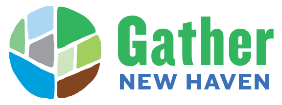

Against the Grain Community

Gather New Haven connects people to each other and to shared natural resources through urban agriculture, public health, community engagement, nature-based learning, outdoor recreation, and environmental stewardship. Formed in 2020 through a merger of New Haven Farms and New Haven Land Trust, Gather engages youth and adults of all ages while working toward justice and equity for both people and the environment. Their work transforms green spaces into places of belonging, healing, and collective power.
En españolGather New Haven conecta a las personas entre sí y con los recursos naturales compartidos a través de la agricultura urbana, la salud pública, el compromiso comunitario, el aprendizaje en la naturaleza, la recreación al aire libre y la administración ambiental. Formada en 2020 mediante la fusión de New Haven Farms y New Haven Land Trust, Gather involucra a jóvenes y adultos de todas las edades trabajando hacia la justicia y la equidad tanto para las personas como para el medio ambiente. Su trabajo transforma los espacios verdes en lugares de pertenencia, sanación y poder colectivo.
Visit Website